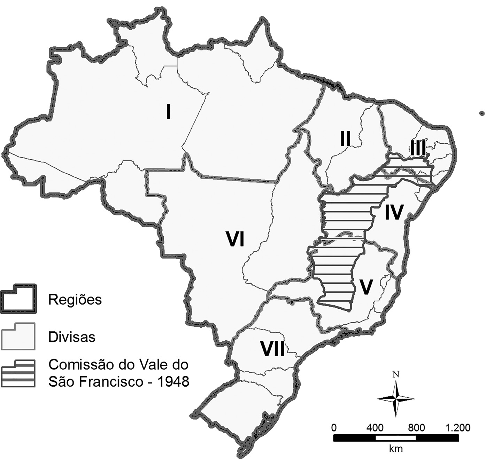
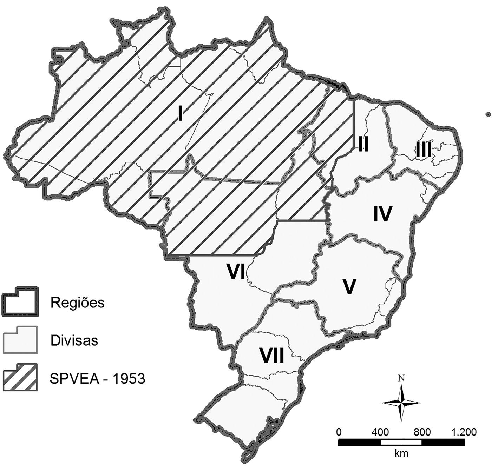
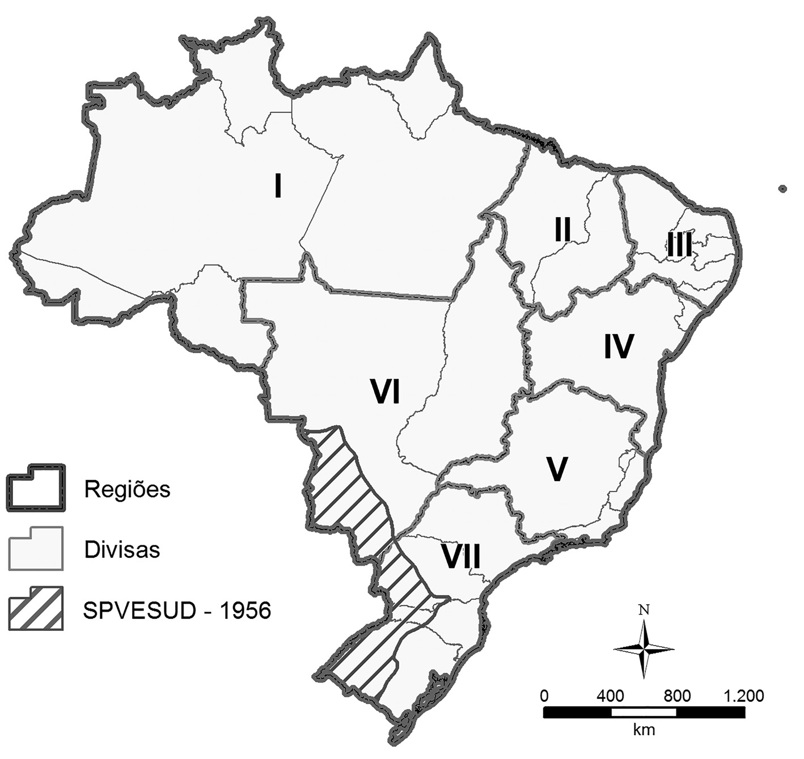

Introdução
A partir de 1930, se iniciou a fase de maior industrialização do país, conheci-da como nacional-desenvolvimentismo, que perdurou por mais de cinquen-ta anos, com base num Estado forte, empresário, planejador e financiador (Draibe, 1985, p. 19). A centralização no governo federal foi uma forma de coman-dar o processo, que se personificou na figura de Getúlio Vargas, num movimento de repactuação com as elites brasileiras (Codato, 2015).(2020, p. 35)
No ano de 1945, logo após a Segunda Guerra Mundial, Vargas sai do poder e a democracia é restabelecida no Brasil, com a eleição do general Eurico Gaspar Dutra para a Presidência da República, numa linha mais liberal e menos naciona-lista (Ianni, 1971, p. 83). Porém, é nesse período que o então presidente reeleito dos Estados Unidos, Harry Truman, propõe, no ponto IV do seu discurso de posse, em 1949, a possibilidade de um apoio técnico norte-americano aos países subdesenvolvidos, no sentido de “(…) colaborar financeiramente com os países ameaçados pelo avanço comunista” (Lopes, 2009, p. 83), o que, grosso modo, co-laborou com o processo de industrialização vivido pelo Brasil. As medidas ficaram conhecidas como a Lei sobre o desenvolvimento internacional, e, a nosso ver, foram um assentimento americano para a industrialização dos países periféricos, um mal menor ante o controle comunista sobre aqueles países.(2020, pp. 35–36)
Outra missão entre Estados Unidos e Brasil foi a Missão Abbink, de 1948, que influenciou o Plano Salte (que dava prioridade para saúde, alimentação, trans-porte e energia), do presidente Eurico Gaspar Dutra. Sob a chefia do economista Octavio e Gouveia de Bulhões, a missão buscou dar subsídios para políticas gover-namentais, uma vez que o Estado teria o papel ativo de coordenar investimentos realizados pela iniciativa privada, e o Brasil deveria aproveitar os recursos externos disponíveis, já que não tinha capital suficiente para industrialização do país (Ianni, 1971, p. 96-98).(2020, p. 36)
Desse processo é importante destacar a abertura dos Estados Unidos ao pla-nejamento do Estado e à industrialização da América Latina como um processo mais amplo, a exemplo da criação da Comissão Econômica para a América Latina e o Caribe (CEPAL), em 1948, no arcabouço da Organização das Nações Unidas (ONU), notadamente comandada pelos Estados Unidos.(2020, p. 37)
Os governos poderiam agir por intermédio de políticas fiscais (alterar gastos e tributos), monetárias (modificar a emissão de moeda) e cambiais (modificar a compa-ração da moeda local com a estrangeira), utilizando diversas ferramentas, como a taxa de juros e a dívida pública, no sentido de coordenar os investimentos, o consumo e as transações com o exterior, para manter ou até mesmo expandir a renda, desde que cuidando da inflação. A expansão da renda da sociedade era o principal componente para o alcance do bem-estar, e o Estado era elemento constitutivo do capitalismo.(2020, p. 37)
A Campanha de Marcha para o Oeste
Maciel (2011, p. 4) traz o exemplo da campanha Marcha para o Oeste. Até os anos 1940, as comunicações no Brasil eram realizadas quase exclusivamente pela navegação costeira, e quando era necessário alcançar regiões do interior, se recorria às vias fluviais de penetração ou a precários meios de transporte terrestre. Ante as ameaças externas na costa brasileira, em decorrência do ingresso do Brasil na Segunda Guerra Mundial, em 1942, surgiu de forma prioritária e imediata a missão de implantar uma rota de comunicações pelo interior do Brasil, entre as cidades do Rio de Janeiro e de Manaus. Tal missão foi atribuída à Expedição Roncador-Xingu. Além de promover a integração física entre a capital federal e a região amazônica, esta missão tinha por objetivo mobilizar um contingente de trabalhadores para as áreas de extração de látex – oriundos sobretudo do Nordeste –, a fim de aumentar a produção de borracha e incrementar as exportações desti-nadas aos Estados Unidos, o principal mercado consumidor da borracha brasileira.(2020, p. 38)
A Expedição Roncador-Xingu estava inserida na campanha Marcha para o Oeste, do governo de Getúlio Vargas, que, desde a Revolução de 1930, pregava a unidade territorial e a integração nacional por meio da ocupação do oeste do país. Essa campanha evidencia, portanto, as preocupações do Estado brasileiro com a integração e a segurança nacional no âmbito do projeto nacional conformado a partir da Revolução de 1930.(2020, p. 40)
As instituições e os Planos de Valorização Regionais
Com a volta de Getúlio Vargas em 1950, o projeto de integração nacional (pauta-do na segurança nacional e na integração dos mercados regionais) se revigora e se materializa, e começa a coexistir no pós-guerra, com o planejamento e a expressão desenvolvimento, que ganharam força nas linhas que direcionavam a ação do Estado.(2020, p. 40)
Devido ao art. 29 da Constituição Federal de 1946, foi criada, em 1948, a Comissão do Vale do São Francisco (CSVF), para uma região específica no Nordeste, graças à “(…) iniciativa de membros do Congresso Nacional com interesse políticos e econômicos na região” (Ianni, 1971, p. 95). Tratava-se de uma empresa pública com autonomia financeira e administrativa, diretamente vinculada à Presidência da República. As entidades existentes na região com a mesma finalidade passariam a ser orientadas e fiscalizadas pela CVSF, à qual caberia elaborar o Plano Geral de Aproveitamento do Vale do São Francisco (que foi elaborado em 1950), objetivando a regularização do curso de seus rios, a melhor distribuição de suas águas, a utilização de seu potencial hidrelétrico, o fomento da indústria e da agricultura, o desenvolvimento da irrigação, a mo-dernização dos seus transportes, o incremento da imigração e da colonização e a assistência à exploração de suas riquezas (Brasil, 1948)(2020, p. 40)

Em decorrência do artigo constitucional, em 1950, foram realizados estu-dos; e em 1953, foi instituído o Plano de Valorização da Amazônia, bem como inaugurada uma instituição para geri-lo, a Superintendência do Plano de Valorização da Amazônia (SPVEA). Marques (2007, p. 23) sugere que as instituições foram capturadas pelas elites nacionais e regionais, o que, a nosso ver, foi o caso da SPVEA, assim como a IFOCS e depois o DNOCS, no Nordeste, sem grandes ações modificadoras da estrutura regional. O Plano de Valorização Econômica da Amazônia seria realizado em planos quinquenais, destinando-se, sobretudo, à produção agrícola e extrativa da floresta; ao aproveitamento dos recursos minerais; à industrialização das matérias-primas de produção regional; a um plano de viação; a uma política de energia regional em bases econômicas; ao incentivo da imigração de correntes de população; à promoção do agrupamento populacional em áreas escolhidas; e ao incentivo do capital privado a promover iniciativas destinadas ao desenvolvimento das riquezas regionais (Brasil, 1953).(2020, p. 42)

Da mesma maneira, na região Sul, foi criada, em 1956, a Superintendência do Plano de Valorização Econômica da Região da Fronteira Sul e Sudoeste do País (SPVESUD), que na lei de criação já apontava o imperativo de integrar a região à economia nacional (Brasil, 1956). O referido plano tinha por principais objetivos elevar o padrão de vida das populações da região e promover o incremento das atividades produtivas, e seria executado durante vinte anos, em quatro programas quinquenais, abrangendo as ações a serem realizadas na região pelo governo federal e pelas administrações estaduais e municipais (Brasil, 1956).(2020, p. 44)

É importante ressaltar que, dos desdobramentos da Constituição de 1946, surgiram diversas instituições com foco regional, no qual Rômulo de Almeida teve intensa participação, não só no que se refere ao Nordeste, como destaca Fernandes (2010, p. 279). Por conseguinte, foi nesse contexto que começou a ganhar forma a definição de regiões-problema, que deveriam ser sistematicamente abrangidas por ações direcionadas do governo federal.(2020, p. 46)
Resumo
Apartir dos anos 1930 o desenvolvimento brasileiro é marcado pela atuação de empresas privadas, muitas delas internacionais, atuando no território nacional. O estado se conteve a administrar e planejar obras realizadas e financiadas com capital estrangeiro que, embora os autores citem que visavam uma aproximação do pais ao bloco capitalista, também representavam uma estratégio do neo-colonialismo via a CEPAL - Comissão Econômica para a América Latina e Caribe.
Em se tratando da questão da integração, a era Vargas será marcada pela *Marcha para o Oeste”, frente as pressões da Guerra e preocupados com a presença de áreas remotas dentro do território, dá inicio uma campanha de interiorização do Brasil. É nesse momento que a historia da seca e da regionalização se cruzam, com a transformação da IFOCS - antiga IOCS - em DNOCS(Departamento Nacional de Obras contra as Secas) o orgão passa a ter maior numero de responsabilidades que iriam servir para integrar a região nordeste ao restante do país.
Em 1950, a o retorno democrático de Vargas inaugura um periodo de consolidação das politicas regionais, é nesse momento que se começa a relimitar e planejar politicas com base na idéia de região-problema, com a criação de 3 empresas estatais: Comissão do Vale do São Francisco (CSVF), Superintendência do Plano de Valorização da Amazônia (SPVEA) e Superintendência do Plano de Valorização Econômica da Região da Fronteira Sul e Sudoeste do País (SPVESUD). Diferente dos planos e delimintações anteriores, estes orgãos estavam ligados a planos nacionais de atuação e contavam com fundos e diretizes contitucionais para atuarem. Isso não impediu porém que estas fossem apropriadas por poderes locais como havia antes acontecido com a IFOCS.
Os ares porém no pais estavam a mudar com a aceleração da industrialização nos grandes centros brasileiros. A chegada de JK ao poder em 1955 iria pensionar essa relação pacifica com o capital estrangeiro ao introduzir planos de substituição de importações, assim como a demanda de consumo desses grandes centros irá demandar maior investimento no litoral.